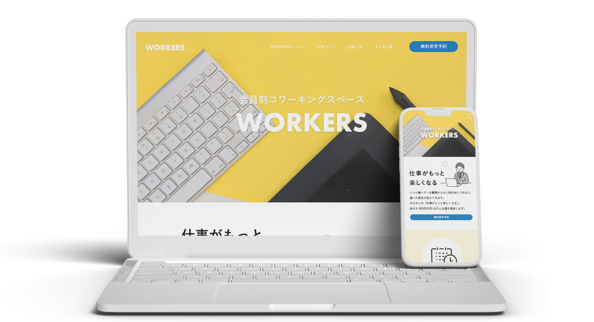
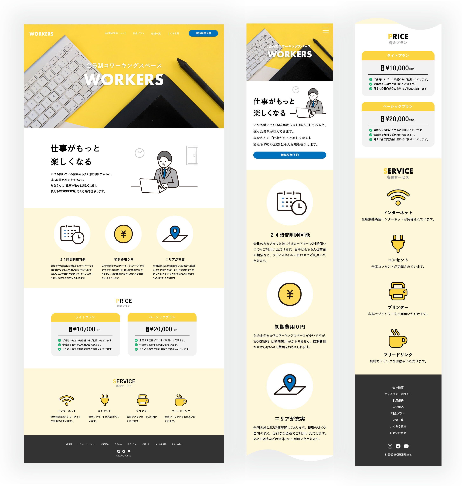
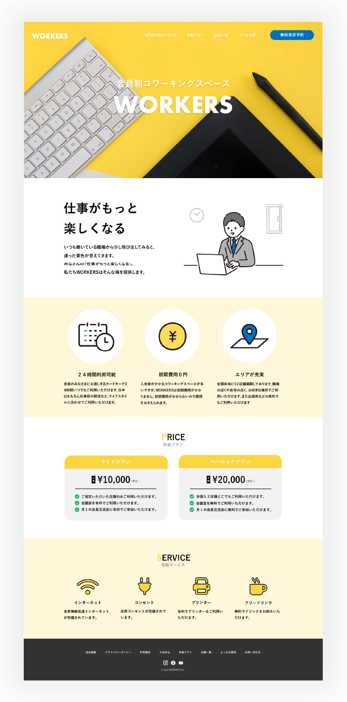
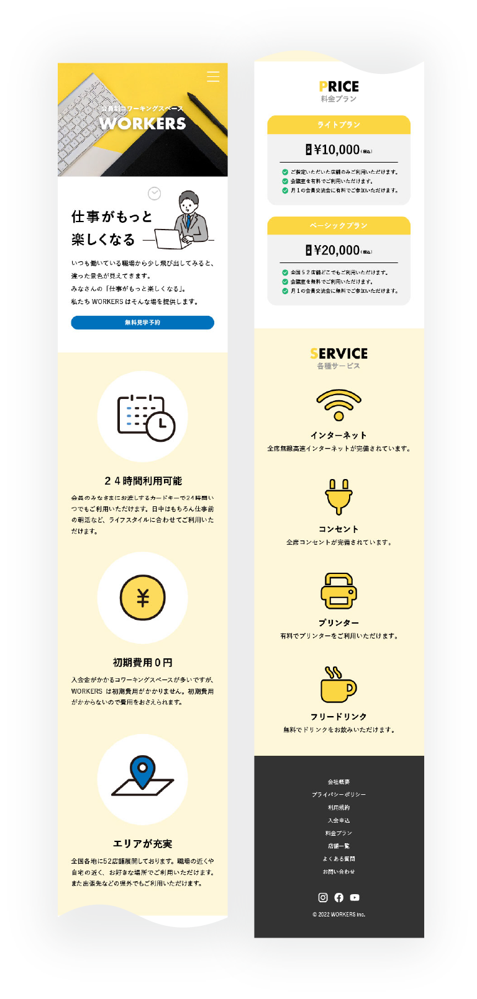

works > website
ワーキングスペースサイト（架空）
2024.05


集中して働ける場所を求めている
20代〜50代の社会人
世の中的に新しいサービスを認知してもらい
無料見学予約に繋げるため
1週間
Illustrater
スクール課題として、会員制コワーキングスペースの架空サイトを制作しました。
クライアント様からは黄色をベースに使用し、サービスの利用者が増えるようなサイトにして欲しい、と希望があったと想定し制作しました。

- リード文をシンプルに構成し伝わりやすくした
- それぞれのセクションをデザインの４原則に則って制作することで各情報を読み取りやすくした
- ファーストビューに彩度の強い黄色を使用することでパッと目を惹くサイトに
- このサイトの目的である無料見学予約にスムーズに誘導出来るよう、メインカラーで使用した黄色の補色である青を予約ボタンに使用
- 明度を下げた黄色の背景色をセクションごとに交互に用いることで、アニメーションを使わなくてもサイトに動きが感じられ、配色にも統一感を持たせた



